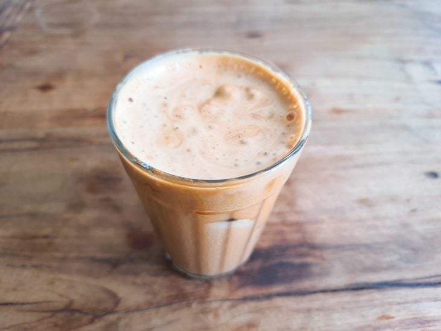

Iced Coffee

Description
Iced coffee is a beverage made with coffee mixed with frozen food. This type of drink is more suitable for the summer months, but it can also be enjoyed on colder winter days.
Ingredients
- 2 tablespoons of instant coffee
- 1/2 tablespoon of sugar
- 200 ml of cold milk
- 2 tablespoons of very cold water
- Ice to taste
- Vanilla extract to taste (optional)
Steps
- Gather all the ingredients to prepare a delicious and super easy creamy iced coffee.
- In a bowl, add the coffee, sugar, cold water, and quickly beat with a whisk for about 5 minutes or until a shiny and thick cream forms - you can also use a mixer or hand blender to make it easier.
- In a glass or cup, add some ice cubes, the milk, and the vanilla extract. Stir to chill well.
- Then, add about 2 to 3 tablespoons of the creamy coffee and lightly stir to incorporate the ingredients.
- If desired, add more ice cubes and serve. The recipe yields up to three cups, so enjoy it with your loved ones. If you don’t use it all, you can store it in a container with a lid in the refrigerator.